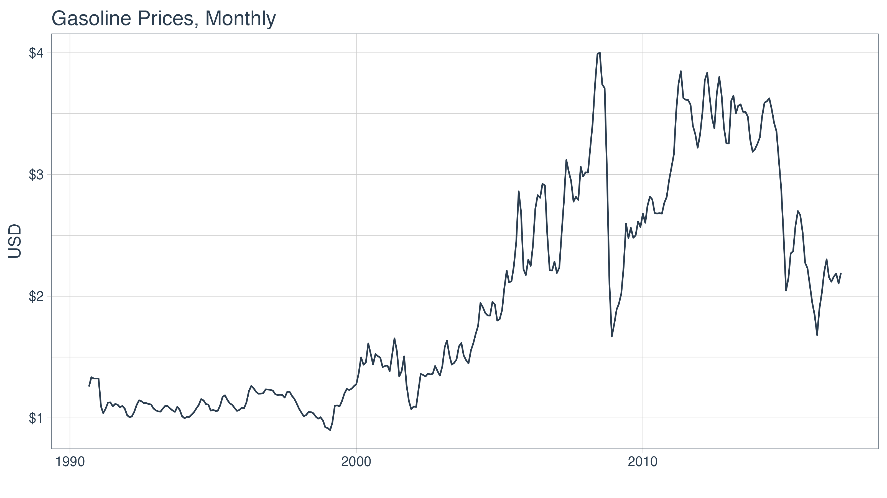
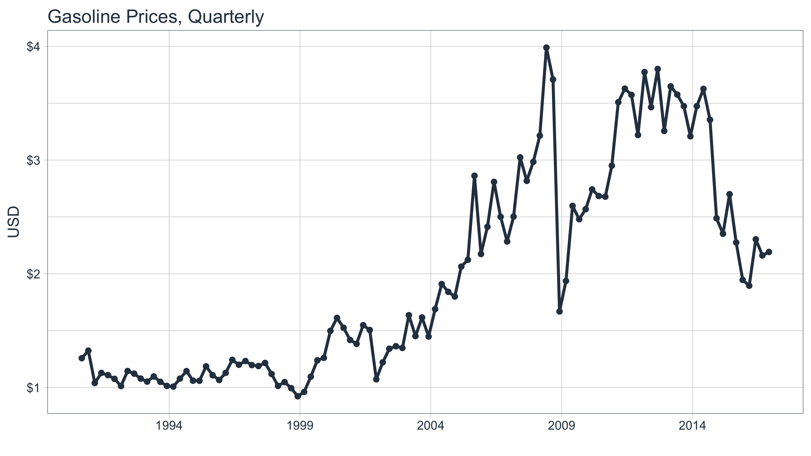
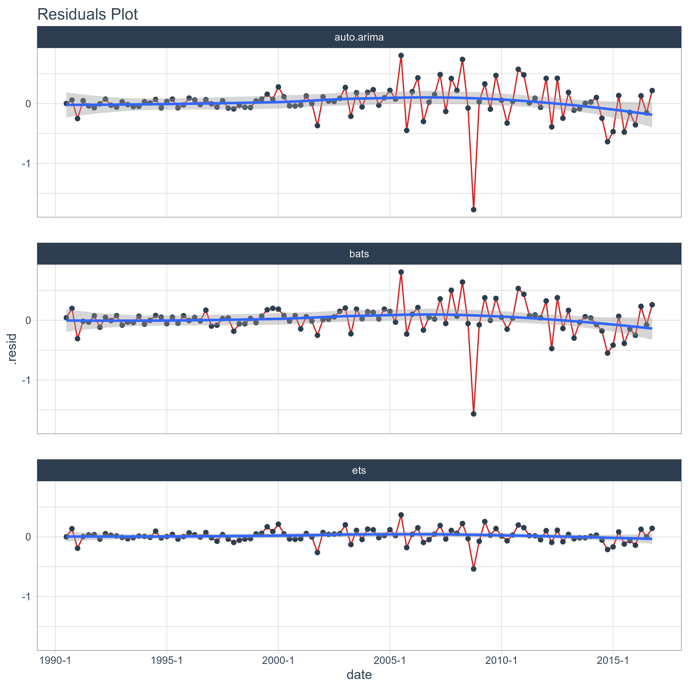
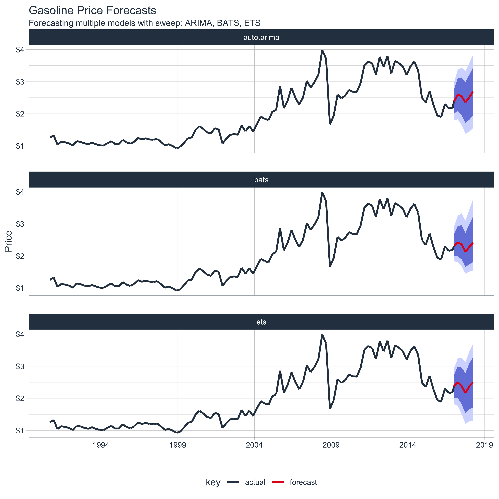

vignettes/SW02_Forecasting_Multiple_Models.Rmd
SW02_Forecasting_Multiple_Models.RmdExtending
broomto time series forecasting
One of the most powerful benefits of sweep is that it helps forecasting at scale within the “tidyverse”. There are two common situations:
In this vignette we’ll review how sweep can help the second situation: Applying multiple models to a time series.
To start, let’s get some data from the FRED data base using tidyquant. We’ll use tq_get() to retrieve the Gasoline Prices from 1990 through today (2019-10-09).
gas_prices_monthly_raw <- tq_get(
x = "GASREGCOVM",
get = "economic.data",
from = "1990-01-01",
to = "2016-12-31")
gas_prices_monthly_raw## # A tibble: 316 x 2
## date price
## <date> <dbl>
## 1 1990-09-01 1.26
## 2 1990-10-01 1.34
## 3 1990-11-01 1.32
## 4 1990-12-01 NA
## 5 1991-01-01 NA
## 6 1991-02-01 1.09
## 7 1991-03-01 1.04
## 8 1991-04-01 1.08
## 9 1991-05-01 1.13
## 10 1991-06-01 1.13
## # … with 306 more rowsUpon a brief inspection, the data contains 2 NA values that will need to be dealt with.
## Min. 1st Qu. Median Mean 3rd Qu. Max. NA's
## 0.900 1.138 1.615 1.974 2.697 4.002 2We can use the fill() from the tidyr package to help deal with these data. We first fill down and then fill up to use the previous and then post days prices to fill in the missing data.
gas_prices_monthly <- gas_prices_monthly_raw %>%
fill(price, .direction = "down") %>%
fill(price, .direction = "up")We can now visualize the data.
gas_prices_monthly %>%
ggplot(aes(x = date, y = price)) +
geom_line(color = palette_light()[[1]]) +
labs(title = "Gasoline Prices, Monthly", x = "", y = "USD") +
scale_y_continuous(labels = scales::dollar) +
theme_tq()
Monthly periodicity might be a bit granular for model fitting. We can easily switch periodicity to quarterly using tq_transmute() from the tidyquant package along with the periodicity aggregation function to.period from the xts package. We’ll convert the date to yearqtr class which is regularized.
gas_prices_quarterly <- gas_prices_monthly %>%
tq_transmute(mutate_fun = to.period, period = "quarters")
gas_prices_quarterly## # A tibble: 106 x 2
## date price
## <date> <dbl>
## 1 1990-09-01 1.26
## 2 1990-12-01 1.32
## 3 1991-03-01 1.04
## 4 1991-06-01 1.13
## 5 1991-09-01 1.11
## 6 1991-12-01 1.08
## 7 1992-03-01 1.01
## 8 1992-06-01 1.14
## 9 1992-09-01 1.12
## 10 1992-12-01 1.08
## # … with 96 more rowsAnother quick visualization to show the reduction in granularity.
gas_prices_quarterly %>%
ggplot(aes(x = date, y = price)) +
geom_line(color = palette_light()[[1]], size = 1) +
labs(title = "Gasoline Prices, Quarterly", x = "", y = "USD") +
scale_y_continuous(labels = scales::dollar) +
scale_x_date(date_breaks = "5 years", date_labels = "%Y") +
theme_tq()
In this section we will use three models to forecast gasoline prices:
Before we jump into modeling, let’s take a look at the multiple model process from R for Data Science, Chapter 25 Many Models. We first create a data frame from a named list. The example below has two columns: “f” the functions as text, and “params” a nested list of parameters we will pass to the respective function in column “f”.
df <- tibble(
f = c("runif", "rpois", "rnorm"),
params = list(
list(n = 10),
list(n = 5, lambda = 10),
list(n = 10, mean = -3, sd = 10)
)
)
df## # A tibble: 3 x 2
## f params
## <chr> <list>
## 1 runif <named list [1]>
## 2 rpois <named list [2]>
## 3 rnorm <named list [3]>We can also view the contents of the df$params column to understand the underlying structure. Notice that there are three primary levels and then secondary levels containing the name-value pairs of parameters. This format is important.
## [[1]]
## [[1]]$n
## [1] 10
##
##
## [[2]]
## [[2]]$n
## [1] 5
##
## [[2]]$lambda
## [1] 10
##
##
## [[3]]
## [[3]]$n
## [1] 10
##
## [[3]]$mean
## [1] -3
##
## [[3]]$sd
## [1] 10Next we apply the functions to the parameters using a special function, invoke_map(). The parameter lists in the “params” column are passed to the function in the “f” column. The output is in a nested list-column named “out”.
## # A tibble: 3 x 3
## f params out
## <chr> <list> <list>
## 1 runif <named list [1]> <dbl [10]>
## 2 rpois <named list [2]> <int [5]>
## 3 rnorm <named list [3]> <dbl [10]>And, here’s the contents of “out”, which is the result of mapping a list of functions to a list of parameters. Pretty powerful!
## [[1]]
## [1] 0.05242687 0.76870487 0.19924121 0.20675432 0.82526286 0.82780425
## [7] 0.33987675 0.25796440 0.46065536 0.97034319
##
## [[2]]
## [1] 7 18 8 11 13
##
## [[3]]
## [1] -9.3488295 -9.5608966 -5.2857543 -13.9731025 4.1042530
## [6] 2.6270035 -0.1667477 -21.1824655 19.3794484 -4.0893574Take a minute to understand the conceptual process of the invoke_map function and specifically the parameter setup. Once you are comfortable, we can move on to model implementation.
We’ll need to take the following steps to in an actual forecast model implementation:
This is easier than it sounds. Let’s start by coercing the univariate time series with tk_ts().
gas_prices_quarterly_ts <- gas_prices_quarterly %>%
tk_ts(select = -date, start = c(1990, 3), freq = 4)
gas_prices_quarterly_ts## Qtr1 Qtr2 Qtr3 Qtr4
## 1990 1.258 1.324
## 1991 1.040 1.128 1.109 1.076
## 1992 1.013 1.145 1.122 1.078
## 1993 1.052 1.097 1.050 1.014
## 1994 1.008 1.078 1.144 1.060
## 1995 1.059 1.186 1.108 1.066
## 1996 1.129 1.243 1.200 1.233
## 1997 1.197 1.189 1.216 1.119
## 1998 1.014 1.048 0.994 0.923
## 1999 0.961 1.095 1.239 1.261
## 2000 1.498 1.612 1.525 1.418
## 2001 1.384 1.548 1.506 1.072
## 2002 1.221 1.341 1.363 1.348
## 2003 1.636 1.452 1.616 1.448
## 2004 1.689 1.910 1.841 1.800
## 2005 2.063 2.123 2.862 2.174
## 2006 2.413 2.808 2.501 2.284
## 2007 2.503 3.024 2.817 2.984
## 2008 3.215 3.989 3.709 1.669
## 2009 1.937 2.597 2.480 2.568
## 2010 2.742 2.684 2.678 2.951
## 2011 3.509 3.628 3.573 3.220
## 2012 3.774 3.465 3.801 3.256
## 2013 3.648 3.576 3.474 3.209
## 2014 3.474 3.626 3.354 2.488
## 2015 2.352 2.700 2.275 1.946
## 2016 1.895 2.303 2.161 2.192Next, create a nested list using the function names as the first-level keys (this is important as you’ll see in the next step). Pass the model parameters as name-value pairs in the second level.
models_list <- list(
auto.arima = list(
y = gas_prices_quarterly_ts
),
ets = list(
y = gas_prices_quarterly_ts,
damped = TRUE
),
bats = list(
y = gas_prices_quarterly_ts
)
)Now, convert to a data frame using the function, enframe() that turns lists into tibbles. Set the arguments name = "f" and value = "params". In doing so we get a bonus: the model names are the now convieniently located in column “f”.
## # A tibble: 3 x 2
## f params
## <chr> <list>
## 1 auto.arima <named list [1]>
## 2 ets <named list [2]>
## 3 bats <named list [1]>We are ready to invoke the map. Combine mutate() with invoke_map() as follows. Bada bing, bada boom, we now have models fitted using the parameters we defined previously.
## # A tibble: 3 x 3
## f params fit
## <chr> <list> <list>
## 1 auto.arima <named list [1]> <fr_ARIMA>
## 2 ets <named list [2]> <ets>
## 3 bats <named list [1]> <bats>It’s a good point to review and understand the model output. We can review the model parameters, accuracy measurements, and the residuals using sw_tidy(), sw_glance(), and sw_augment().
The tidying function returns the model parameters and estimates. We use the combination of mutate and map to iteratively apply the sw_tidy() function as a new column named “tidy”. Then we unnest and spread to review the terms by model function.
models_tbl_fit %>%
mutate(tidy = map(fit, sw_tidy)) %>%
unnest(tidy) %>%
spread(key = f, value = estimate)## # A tibble: 20 x 6
## params fit term auto.arima bats ets
## <list> <list> <chr> <dbl> <dbl> <dbl>
## 1 <named list [1… <fr_ARIMA> ar1 0.834 NA NA
## 2 <named list [1… <fr_ARIMA> ma1 -0.964 NA NA
## 3 <named list [1… <fr_ARIMA> sar1 0.939 NA NA
## 4 <named list [1… <fr_ARIMA> sma1 -0.776 NA NA
## 5 <named list [1… <bats> alpha NA 5.88e-1 NA
## 6 <named list [1… <bats> ar.coefficients NA NA NA
## 7 <named list [1… <bats> beta NA NA NA
## 8 <named list [1… <bats> damping.parame… NA NA NA
## 9 <named list [1… <bats> gamma.values NA -2.62e-2 NA
## 10 <named list [1… <bats> lambda NA 6.05e-5 NA
## 11 <named list [1… <bats> ma.coefficients NA 2.56e-1 NA
## 12 <named list [2… <ets> alpha NA NA 8.31e-1
## 13 <named list [2… <ets> b NA NA -5.24e-2
## 14 <named list [2… <ets> beta NA NA 1.00e-4
## 15 <named list [2… <ets> gamma NA NA 5.21e-2
## 16 <named list [2… <ets> l NA NA 1.29e+0
## 17 <named list [2… <ets> phi NA NA 8.37e-1
## 18 <named list [2… <ets> s0 NA NA 4.69e-2
## 19 <named list [2… <ets> s1 NA NA -2.09e-2
## 20 <named list [2… <ets> s2 NA NA -4.07e-2Glance is one of the most powerful tools because it yields the model accuracies enabling direct comparisons between the fit of each model. We use the same process for used for tidy, except theres no need to spread to perform the comparison. We can see that the ARIMA model has the lowest AIC by far.
## Warning: The `.drop` argument of `unnest()` is deprecated as of tidyr 1.0.0.
## All list-columns are now preserved.
## This warning is displayed once per session.
## Call `lifecycle::last_warnings()` to see where this warning was generated.## # A tibble: 3 x 15
## f params fit model.desc sigma logLik AIC BIC ME RMSE MAE
## <chr> <list> <lis> <chr> <dbl> <dbl> <dbl> <dbl> <dbl> <dbl> <dbl>
## 1 auto… <name… <fr_… ARIMA(1,1… 0.298 -20.6 51.2 64.4 0.0180 0.291 0.177
## 2 ets <name… <ets> ETS(M,Ad,… 0.118 -76.6 173. 200. 0.0149 0.292 0.170
## 3 bats <name… <bat… BATS(0, {… 0.116 159. 179. 184. 0.0193 0.259 0.159
## # … with 4 more variables: MPE <dbl>, MAPE <dbl>, MASE <dbl>, ACF1 <dbl>We can augment the models to get the residuals following the same procedure. We can pipe (%>%) the results right into ggplot() for plotting. Notice the ARIMA model has the largest residuals especially as the model index increases whereas the bats model has relatively low residuals.
models_tbl_fit %>%
mutate(augment = map(fit, sw_augment, rename_index = "date")) %>%
unnest(augment) %>%
ggplot(aes(x = date, y = .resid, group = f)) +
geom_line(color = palette_light()[[2]]) +
geom_point(color = palette_light()[[1]]) +
geom_smooth(method = "loess") +
facet_wrap(~ f, nrow = 3) +
labs(title = "Residuals Plot") +
theme_tq()## Don't know how to automatically pick scale for object of type yearqtr. Defaulting to continuous.
Creating the forecast for the models is accomplished by mapping the forecast function. The next six quarters are forecasted withe the argument h = 6.
## # A tibble: 3 x 4
## f params fit fcast
## <chr> <list> <list> <list>
## 1 auto.arima <named list [1]> <fr_ARIMA> <forecast>
## 2 ets <named list [2]> <ets> <forecast>
## 3 bats <named list [1]> <bats> <forecast>Next, we map sw_sweep, which coerces the forecast into the “tidy” tibble format. We set fitted = FALSE to remove the model fitted values from the output. We set timetk_idx = TRUE to use dates instead of numeric values for the index.
models_tbl_fcast_tidy <- models_tbl_fcast %>%
mutate(sweep = map(fcast, sw_sweep, fitted = FALSE, timetk_idx = TRUE, rename_index = "date"))
models_tbl_fcast_tidy## # A tibble: 3 x 5
## f params fit fcast sweep
## <chr> <list> <list> <list> <list>
## 1 auto.arima <named list [1]> <fr_ARIMA> <forecast> <tibble [112 × 7]>
## 2 ets <named list [2]> <ets> <forecast> <tibble [112 × 7]>
## 3 bats <named list [1]> <bats> <forecast> <tibble [112 × 7]>We can unnest the “sweep” column to get the results of all three models.
## # A tibble: 336 x 11
## f params fit fcast date key price lo.80 lo.95 hi.80 hi.95
## <chr> <list> <lis> <lis> <date> <chr> <dbl> <dbl> <dbl> <dbl> <dbl>
## 1 auto.… <name… <fr_… <for… 1990-09-01 actu… 1.26 NA NA NA NA
## 2 auto.… <name… <fr_… <for… 1990-12-01 actu… 1.32 NA NA NA NA
## 3 auto.… <name… <fr_… <for… 1991-03-01 actu… 1.04 NA NA NA NA
## 4 auto.… <name… <fr_… <for… 1991-06-01 actu… 1.13 NA NA NA NA
## 5 auto.… <name… <fr_… <for… 1991-09-01 actu… 1.11 NA NA NA NA
## 6 auto.… <name… <fr_… <for… 1991-12-01 actu… 1.08 NA NA NA NA
## 7 auto.… <name… <fr_… <for… 1992-03-01 actu… 1.01 NA NA NA NA
## 8 auto.… <name… <fr_… <for… 1992-06-01 actu… 1.14 NA NA NA NA
## 9 auto.… <name… <fr_… <for… 1992-09-01 actu… 1.12 NA NA NA NA
## 10 auto.… <name… <fr_… <for… 1992-12-01 actu… 1.08 NA NA NA NA
## # … with 326 more rowsFinally, we can plot the forecasts by unnesting the “sweep” column and piping to ggplot().
models_tbl_fcast_tidy %>%
unnest(sweep) %>%
ggplot(aes(x = date, y = price, color = key, group = f)) +
geom_ribbon(aes(ymin = lo.95, ymax = hi.95),
fill = "#D5DBFF", color = NA, size = 0) +
geom_ribbon(aes(ymin = lo.80, ymax = hi.80, fill = key),
fill = "#596DD5", color = NA, size = 0, alpha = 0.8) +
geom_line(size = 1) +
facet_wrap(~f, nrow = 3) +
labs(title = "Gasoline Price Forecasts",
subtitle = "Forecasting multiple models with sweep: ARIMA, BATS, ETS",
x = "", y = "Price") +
scale_y_continuous(labels = scales::dollar) +
scale_x_date(date_breaks = "5 years", date_labels = "%Y") +
theme_tq() +
scale_color_tq()